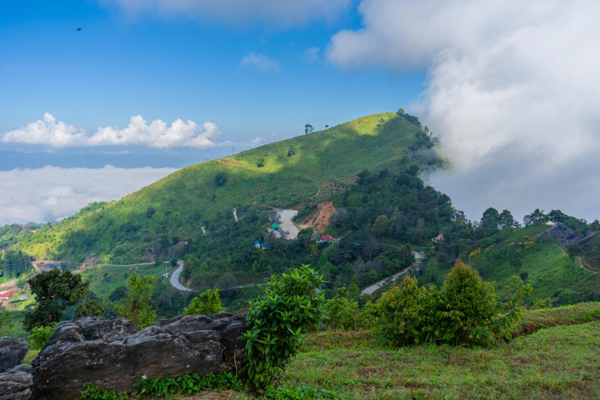
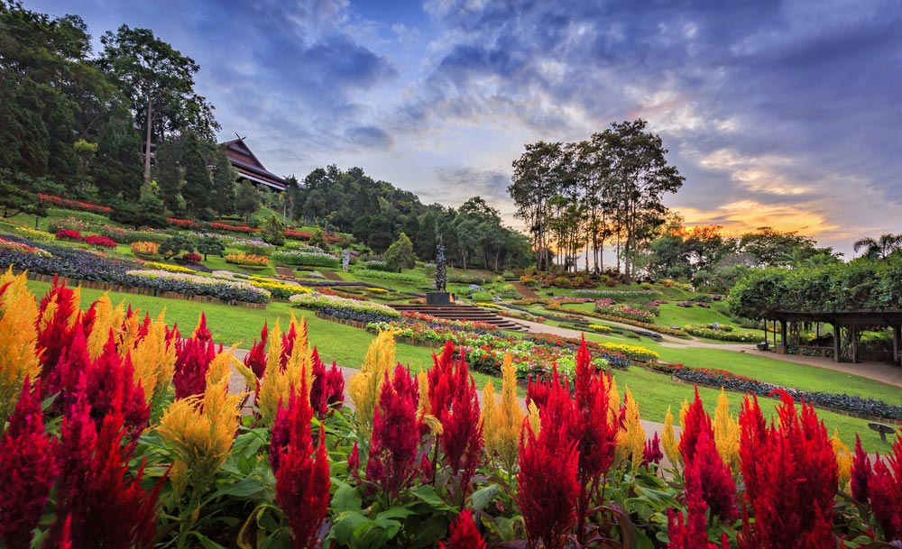
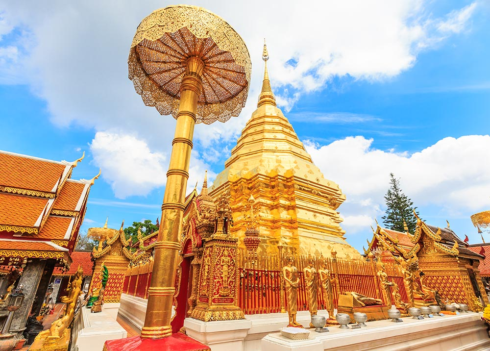
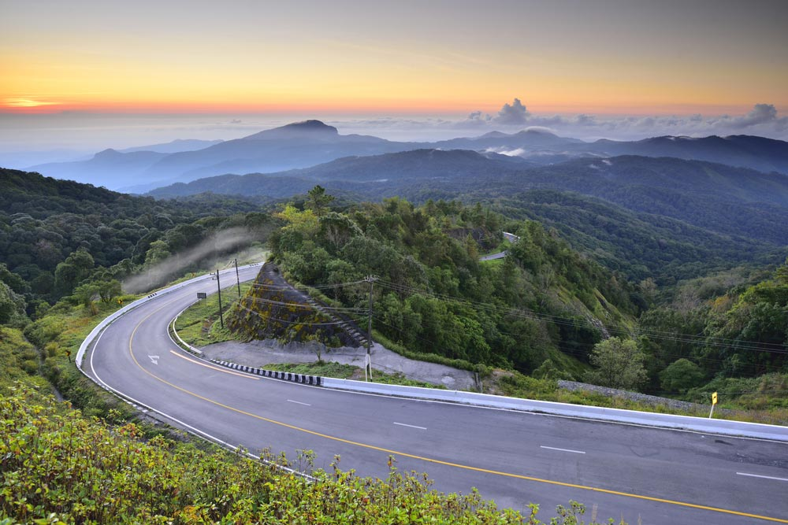
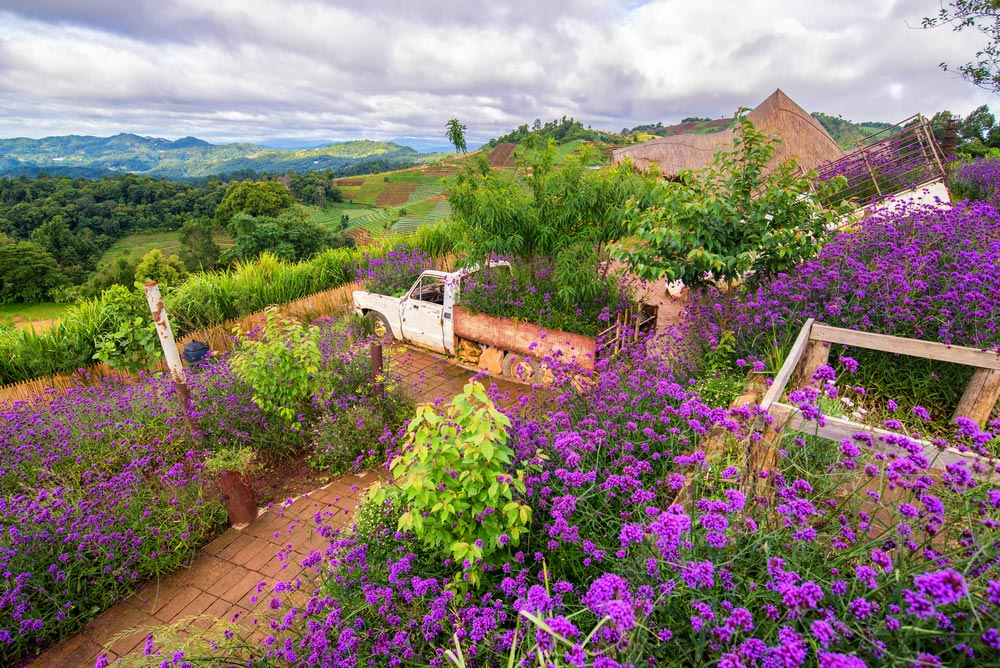
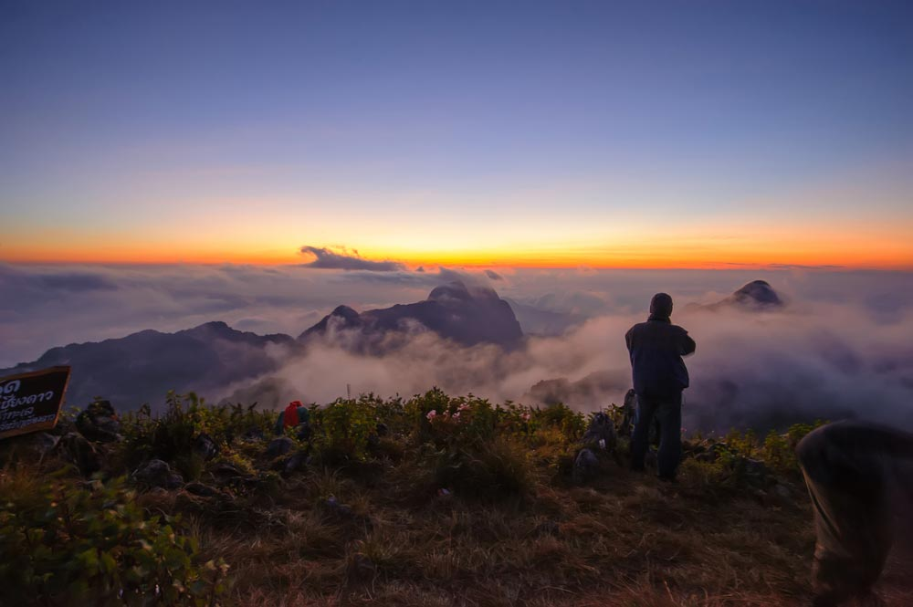
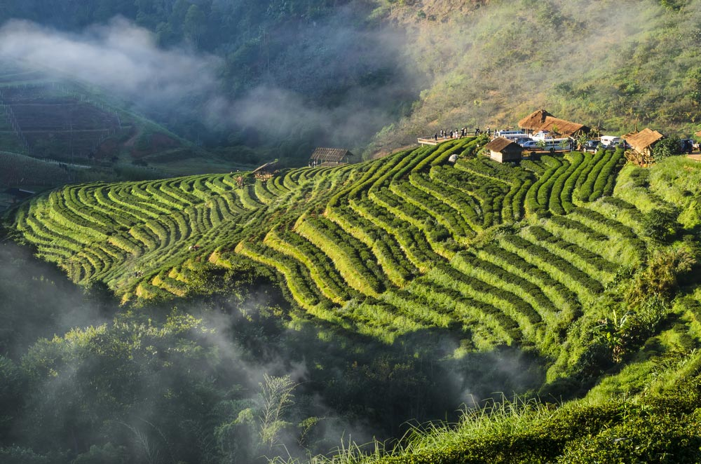
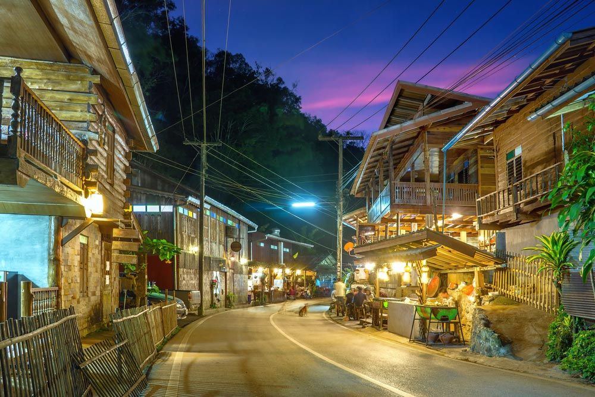
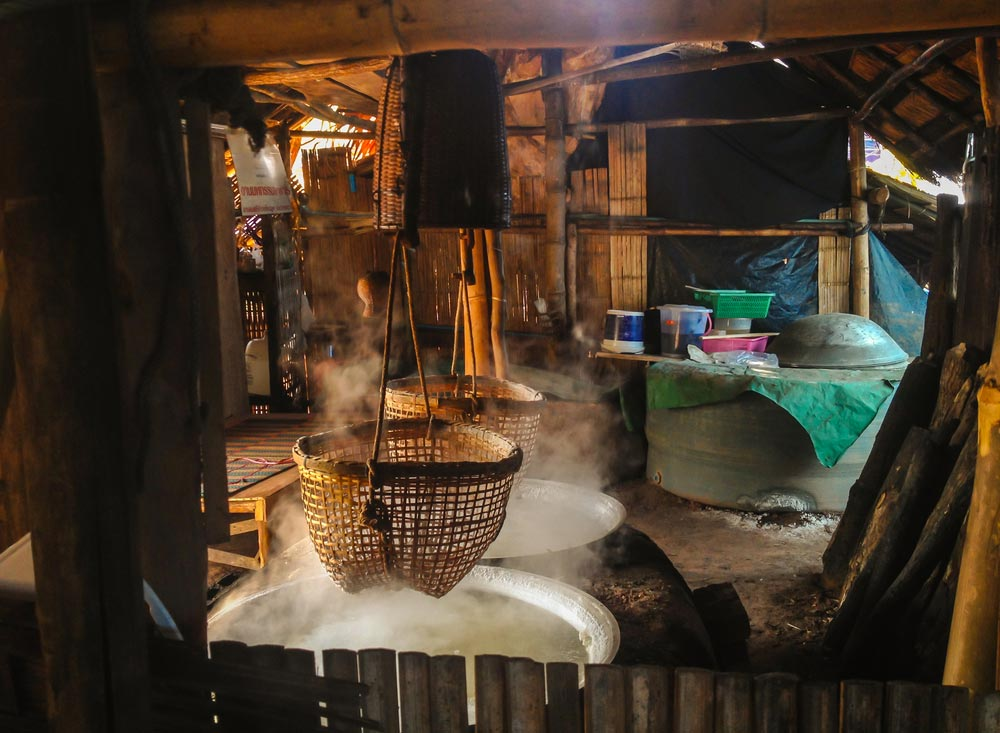

ภูชี้ฟ้า
จังหวัดเชียงราย
เป็นที่ร่ำลือกันว่า "ภูชี้ฟ้า" เหมาะสำหรับเป็นจุดชมและถ่ายรูปพระอาทิตย์ขึ้นและตกดินที่สวยที่สุดแห่งหนึ่งของประเทศ
โดยเฉพาะอย่างยิ่งในช่วงฤดูหนาว ที่นี่จะสวยมากเป็นพิเศษ นอกเหนือจากวิวทัศน์สวย ๆ แล้ว ไม่แน่ว่าระหว่างทางที่เดินขึ้นไป
นักท่องเที่ยวอาจจะได้เจอเข้ากับดอกนางพญาเสือโคร่งและต้นเสี้ยวดอกขาว ซึ่งจะออกดอกบานสะพรั่งในช่วงเดือนมกราคม-กุมภาพันธ์
ความโดดเด่นของภูชี้ฟ้าเห็นจะเป็นหน้าผาหินคล้ายนิ้วชี้ ปกคลุมด้วยหญ้า ไม้พุ่ม และโขดหิน
ซึ่งเป็นจุดที่นักท่องเที่ยวนิยมถ่ายรูปเป็นอย่างมาก เพราะจะเห็นสายหมอกที่ลอยละล่องกลางหุบเขางดงามเกินบรรยาย
==================
ดอยผาตั้ง
จังหวัดเชียงราย

ตั้งอยู่ในเขตตำบลปอ อำเภอเวียงแก่น และเป็นสถานที่ท่องเที่ยวที่ขึ้นชื่อสำหรับชมพระอาทิตย์ขึ้น
และทะเลหมอกในตอนเช้าและชมพระอาทิตย์ตกในเวลาเย็น จากยอดดอยสามารถมองเห็นแม่น้ำโขงฝั่งลาว
และสามารมองเห็นยอดภูชี้ฟ้าที่อยู่ห่างออกไปกว่า 25 กิโลเมตรได้ชัดเจน โดยเฉพาะช่วงหน้าหนาว
ที่นี่จะมองเห็นทะเลหมอกสวย ๆ ตรงบริเวณ "ช่องผาขาด" และ "เนิน 102-เนิน 103" ท่ามกลางบรรยากาศที่เงียบสงบ
หมู่มวลดอกไม้หน้าหนาว ทั้งดอกนางพญาเสือโคร่งและดอกเสี้ยว ที่กำลังออกดอกบานสะพรั่ง
==================
สวนแม่ฟ้าหลวง
จังหวัดเชียงราย

"สวนแม่ฟ้าหลวง" หรือ "สวนดอยตุง" สวนไม้ดอกไม้หลากสีสัน กว้างไกลสุดลูกหูลูกตา
บนพื้นที่ 25 ไร่ ภายในสวนถูกตกแต่งด้วยพันธุ์ไม้ดอกไม้ประดับสวยงาม ดูแลอย่างดี
ผลัดเปลี่ยนหมุนเวียนออกดอกตลอดปี อาทิ ดอกซัลเวีย พิทูเนีย บีโกเนีย กุหลาบ ดอกลำโพง
ไม้มงคลต่าง ๆ ไม้ยืนต้นและซุ้มไม้เลี้อยมากกว่า 70 ชนิด นอกจากแปลงไม้ประทับกลางแจ้ง
แล้วยังมีโรงเรือนไม้ในร่มจุดเด่นคือกล้วยไม้จำพวกรองเท้านารีชนิดต่าง ๆ ที่มีดอกสวยงามมาก
บริเวณกลางสวนมีประติมากรรมเด็กยืนต่อตัวของ มีเซียม ยิบอินซอย
โดยสมเด็จย่าพระราชทานชื่อว่าความต่อเนื่องที่สื่อถึงการทำงานจะสำเร็จได้ต้องทำอย่างต่อเนื่อ
ง
มาถึงจุดนี้แวะเติมพลังกันสักนิดกับ "ดอยตุงคาเฟ่" นั่งพักชิล ๆ จิบกาแฟหอม ๆ ในสวน
==================
วัดพระธาตุดอยสุเทพราชวรวิหาร
จังหวัดเชียงใหม่

วัดที่มีความสำคัญในแง่ประวัติศาสตร์ เป็นวัดคู่บ้านคู่เมืองที่ห้ามพลาดเมื่อมาถึงจังหวัดเชียงใหม่
ภายในเป็นที่ประดิษฐานขององค์เจดีย์ทรงมอญ ที่ใต้ฐานพระเจดีย์มีพระบรมสารีริกธาตุของสมเด็จพระสัมมาสัมพุทธเจ้าบรรจุอยู่
ซึ่งจัดได้ว่าเป็นปูชนียสถานที่แสดงออกถึงศิลปกรรมล้านนาไทยที่สำคัญคู่เมืองเชียงใหม่มาช้านาน อีกทั้งยังเป็นพระธาตุประจำ "ปีมะแม" ด้วย
นอกจากนี้ยังสามารถขึ้นมาชมความงดงามขององค์เจดีย์ พร้อมกับชมทิวทัศน์โดยรอบของตัวเมืองเชียงใหม่ได้ โดยสามารถเดินขึ้นบันไดนาค 300 ขั้น
เพื่อไปยังวัด หรือจะเลือกใช้บริการรถกระเช้าขึ้น-ลงดอยสุเทพ ก็ได้ตามสะดวก
==================
ดอยอินทนนท์
จังหวัดเชียงใหม่

ยอดดอยที่ไม่ควรพลาดอย่างยิ่งสำหรับดอยอินทนนท์เพราะที่นี่สูงจากระดับน้ำทะเลมากถึง 2,565 เมตร
จึงเป็นภูเขาที่สูงที่สุดในเมืองไทย ซึ่งใครต่อใครก็อยากได้ไปสัมผัสสักครั้งในชีวิต ดอยอินทนนท์ตั้งอยู่ในอุทยานแห่งชาติดอยอินทนนท์
มีธรรมชาติที่อุดมสมบูรณ์ อากาศจึงหนาวเย็นตลอดทั้งปี นอกจากนี้บริเวณโดยรอบดอยอินทนนท์ยังมีสถานที่ท่องเที่ยวที่น่าสนใจอีกมากมาย
ไม่ว่าจะเป็นเส้นทางศึกษาธรรมชาติกิ่วแม่ปาน, เส้นทางศึกษาธรรมชาติอ่างกา, น้ำตกสิริภูมิ, น้ำตกแม่ยะ, น้ำตกวชิรธาร,
พระมหาธาตุเจดีย์นภเมทนีดล, พระมหาธาตุเจดีย์นภพลภูมิสิริ เป็นต้น
==================
ม่อนแจ่ม
จังหวัดเชียงใหม่

ส่วนหนึ่งของโครงการหลวงหอย บริเวณด้านบนของม่อนแจ่มสามารถมองเห็นภูเขาสูงใหญ่โดยรอบ
พร้อมกับสายหมอกได้อย่างสวยงาม อีกทั้งชาวบ้านในพื้นที่และเจ้าหน้าที่โครงการหลวงหนองหอย
ยังช่วยกันปรับปรุงทัศนียภาพของม่อนแจ่มให้มีความสวยงามไปด้วยต้นไม้ ดอกไม้นานาพรรณ ให้บานสะพรั่งตลอดทั้งปี
และยังทำซุ้มไม้ไผ่ริมหน้าผาม่อนแจ่ม เพื่อให้นักท่องเที่ยวได้นั่งชมวิวหรือรับประทานอาหารอย่างสบาย ๆ
ในบริเวณใกล้เคียงยังมีแปลงผักและผลไม้เมืองหนาวให้ได้เที่ยวชมอีกด้วย เมื่อผนวกกับอากาศหนาวเย็นและบริสุทธิ์
จึงทำให้ที่นี่เป็นอีกหนึ่งสถานที่ที่นักท่องเที่ยวนิยมไปพักผ่อน ผ่อนคลายพักสมองให้หายเหนื่อยล้า
==================
ดอยหลวงเชียงดาว
จังหวัดเชียงใหม่

อีกหนึ่งยอดดอยที่มีความโดดเด่นอันดับต้น ๆ ของเมืองไทย มีความสูง 2,225 เมตร จากระดับน้ำทะเล
ซึ่งถือว่าสูงที่สุดเป็นอันดับ 3 ของเมืองไทย การที่จะพิชิตยอดดอยหลวงเชียงดาวนั้นไม่ใช่เรื่องง่าย นอกจากร่างกายจะต้องแข็งแรง
พร้อมกับการเดินเท้าที่แสนยากลำบากแล้ว ใจยังต้องพร้อม ต้องสู้อีกด้วย นั่นจึงทำให้ยอดดอยหลวงเชียงดาวได้พบเจอเพื่อนใหม่เพียงวันละไม่กี่คนเท่านั้น
แต่ถ้าหากใครได้ขึ้นไปจนถึงยอดดอย ก็จะพบว่ามันคุ้มค่ากับความเหนื่อย เพราะทัศนียภาพที่สามารถมองเห็นได้จากยอดดอยนั้น
สวยงามจนแทบอยากจะหยุดหายใจ ทั้งนี้นักท่องเที่ยวที่ต้องการจะเดินทางไปพิชิตยอดดอยหลวงเชียงดาว
ต้องทำการขออนุญาตจากทางเขตรักษาพันธุ์สัตว์ป่าเชียงดาวเสียก่อน เพราะจะต้องมีเจ้าหน้าที่นำทาง เพื่อความปลอดภัยของนักท่องเที่ยว
==================
ดอยอ่างขาง
จังหวัดเชียงใหม่

ดินแดนที่โอบล้อมไปด้วยหุบเขาสีเขียวอุดมสมบูรณ์ ตั้งอยู่ที่ตำบลแม่งอน อำเภอฝาง ที่นี่นักท่องเที่ยวสามารถเที่ยวชมแปลงปลูกดอกไม้ ผัก และผลไม้เมืองหนาว
เดินเก็บสตรอว์เบอร์รีสด ๆ จากไร่แบบชิล ๆ ชมแปลงปลูกชาท่ามกลางสายหมอก สัมผัสวิถีชีวิตชาวเขาและอากาศที่หนาวจับใจ สวรรค์บนเขาสูงที่คุณก็สามารถเอื้อมถึง
นอกจากนี้ยังมี "สถานีเกษตรหลวงอ่างขาง" สถานที่ท่องเที่ยวยอดนิยม ด้วยที่นี่ตั้งอยู่ในหุบเขาสูง มีอากาศหนาวเย็นตลอดทั้งปี อีกทั้งยังมีแปลงปลูกพืชผักผลไม้เมืองหนาว
และแปลงดอกไม้เมืองหนาวให้ได้เที่ยวชม ภายในมีสถานที่ท่องเที่ยวที่น่าสนใจ เช่น สวนบอนไซ, เรือนไม้ดอกเมืองหนาว, โรงงานชา, แปลงบ๊วย, สวนไผ่, สวนดอกไม้ 80 ปี, แปลงปลูกสตรอว์เบอร์รี เป็นต้น
==================
บ้านแม่กำปอง
จังหวัดเชียงใหม่

หมู่บ้านเล็ก ๆ ที่อำเภอแม่ออน ก่อตั้งมาประมาณ 100 กว่าปี ประชากรส่วนใหญ่อพยพมาจากอำเภอดอยสะเก็ด
เพื่อเข้ามาทำสวนเมี่ยงเป็นอาชีพ และตั้งบ้านเรือนบริเวณใกล้ ๆ แม่น้ำลำห้วย ภายในชุมชนได้เปิดเป็นแหล่งท่องเที่ยวเชิงอนุรักษ์
พร้อมมีที่พักแบบโฮมสเตย์ให้บริการ นอกจากนี้ยังมีของดีของเด็ดมากมาย เช่น โบสถ์กลางน้ำ (อุทกสีมา)
เก่าแก่อายุกว่า 100 ปี, พืชพรรณหายาก, สวนเมี่ยง, สวนกาแฟ, ดอยม่อนล้าน, ผลิตภัณฑ์หมอนใบชา, การทำบายศรีสู่ขวัญ,
การแสดงศิลปวัฒนธรรมต่าง ๆ ฯลฯ แวะมาสัมผัสวิถีชีวิตและวัฒนธรรมอันแสนอบอุ่นของชุมชนนี้ได้ รับรองว่าจะประทับใจมิรู้ลืม
นี่เป็นเพียงสถานที่ท่องเที่ยวจังหวัดเชียงใหม่เพียงไม่กี่แห่งที่เราหยิบมาแนะนำกันเท่านั้น
ที่นี่ยังมีที่เที่ยวแจ่ม ๆ รอต้อนรับอีกเพียบ ที่สำคัญยังเที่ยวได้ทุกฤดูกาลด้วย
==================
บ่อเกลือสินเธาว์
น่าน

บ่อเกลือสินเธาว์ ตั้งอยู่ที่ตำบลบ่อเกลือใต้ เป็นแหล่งท่องเที่ยวที่มีชื่อเสียงของอำเภอบ่อเกลือและจังหวัดน่าน
เป็นแหล่งชุมชนที่มีการทำบ่อเกลือมาหลายชั่วอายุคน โดยชาวบ้านจะตักน้ำเกลือจากบ่อใต้ดินแล้วให้ไหลมาตามรางท่อไม้ไผ่
เพื่อที่จะนำน้ำเกลือมาต้มให้เหลือแต่เม็ดเกลือ เรียกว่า "เกลือภูเขา" ซึ่งชาวบ้านจะนำมาบริโภค และกรอกใส่ถุงเล็ก ๆ
แบ่งขายให้กับนักท่องเที่ยว ซึ่งก็จะมีการเพิ่มไอโอดีนให้ด้วย สามารถนำมาขัดผิวและทำอาหารได้อย่างปลอดภัยที่เที่ยวน่านยังมีอีกหลากหลาย
ไม่ว่าจะวัดหรือธรรมชาติ นี่เป็นเพียงส่วนหนึ่งของสถานที่ท่องเที่ยวน่านที่เราหยิบมาแนะนำเท่านั้น ยังมีที่เที่ยวน่านอื่น ๆ น่าสนใจอีกมากมาย
==================